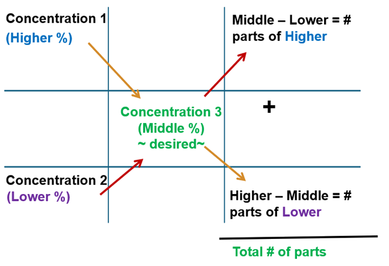

In this module, you will:
Click the title to view the tutorial
Alligation: A method of solving problems that involves the mixing of solutions or mixtures of solids possessing different percentage strengths.
There are two types of alligation methods:
Used when given multiple concentrations and quantities, and asked to find the final concentration of the mixture.
What is the percentage strength of sucrose in a mixture of 500 mL of an aqueous solution containing 40% w/v sucrose, 400 mL of a second aqueous solution containing 21% w/v sucrose, and 100 mL of purified water to make a total of 1000 mL?
Total sucrose (active ingredient) = 200 g + 84 g + 0 g = 284 g
Total quantity of all components = 500 mL + 400 mL + 100 mL = 1000 mL
x = 28.4 g → 28.4% (w/v)
Used when mixing two concentrations to obtain a third (middle) concentration. It helps find the ratio or quantity of each component.

How many grams of 25% zinc oxide ointment and how many grams of 5% zinc oxide ointment are required to prepare 50 grams of a 10% zinc oxide ointment?
High = 25%
Low = 5%
Middle/Desired = 10%
| 25% | 5 parts of 25% |
|
| 10% | + | |
| 5% | 15 parts of 5% |
|
|
Total: 20 parts of 10%
|
For 25%:
x = 12.5 g (of 25%)
For 5%:
x = 37.5 g (of 5%)